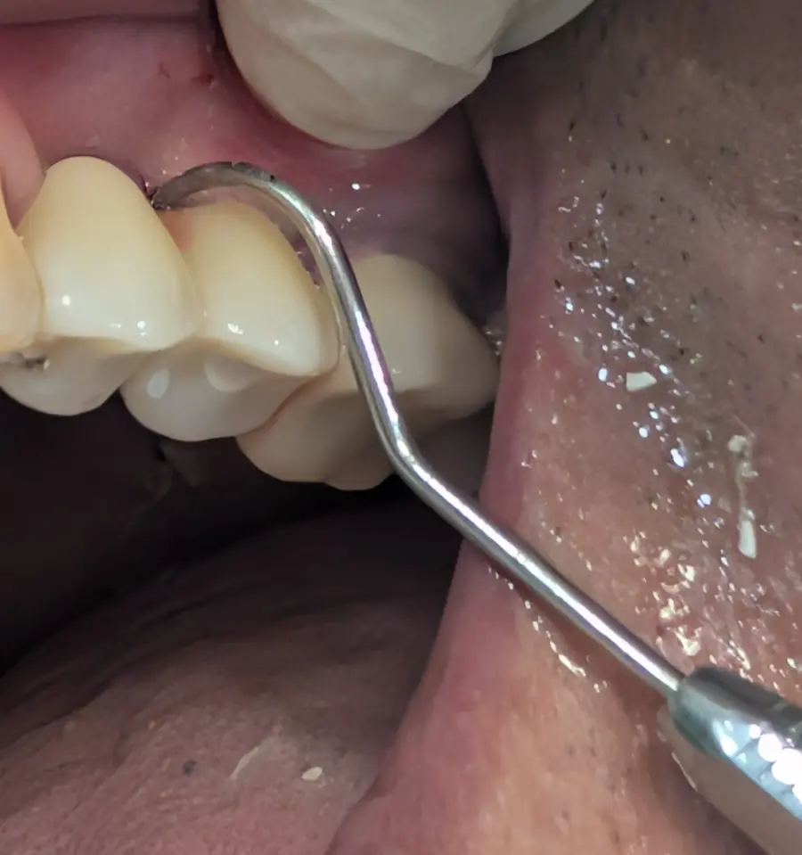

نسخه استخراجشده؛ ترجمه یا تأیید علمی انجام نشده است. وضعیت: captured
بیمار سیگاری کاندید ایمپلنت است. آسیب سیگار از کی شروع میشود: سالها بعد، با پریایمپلنتیتیس، یا پیش از آنکه استخوان اصلاً جوش بخورد؟
دود سیگار پیش از هر اتفاق بالینی روی سطح خود ایمپلنت و ترشوندگی آن اثر میگذارد. ترشوندگی همان خاصیتی است که به خون و سلولها اجازهی چسبیدن اولیه میدهد؛ با افت آن، مرحلهی نخست استئواینتگریشن مختل میشود. یعنی آسیب سیگار از قبل از جوش خوردن استخوان شروع شده است، نه از سالهای بعد.
نتیجه بستری است که هم دفاعش در برابر بیوفیلم ضعیف شده و هم توان ترمیمش؛ ترکیبی که پریایمپلنتیتیس را در سیگاریها هم شایعتر و هم سریعتر میکند. در بیمار سیگاری، فک بالا آسیبپذیرتر است و خطر شکست در آن بیشتر است.
قلیان، ویپ و سیگار الکترونیک، و حشیش هیچکدام جایگزین بیخطری برای سیگار نیستند. بیمار سیگاریای که به اینها کوچ کرده، از نظر برنامهریزی ایمپلنت همچنان بیمار پرریسک است و مشاورهی قطع مصرف و پایش سختگیرانه دربارهی او سر جای خود میماند.
روکشهای ایمپلنت بهصورت اسپلینت طراحی شدهاند و کار آمادهی تحویل است. از نظر فنی همهچیز درست است. پیش از تحویل چه چیزی را باید امتحان کنی؟

یکی از شایعترین مشکلات ایمپلنتها مسائل بیولوژیک است؛ جایی که التهاب و پریایمپلنتایتیس نه از نقص فنی، بلکه از عدم امکان رعایت بهداشت شروع میشود. در روکشهای اسپلینتشده فضای امبراژور بستهتر میشود و بیمار عملاً نمیتواند فلاس، سوپرفلاس یا واترجت را در مسیر صحیح عبور دهد. پلاک باقی میماند، التهاب شروع میشود و یک کیس سالم به سمت پریایمپلنتایتیس حرکت میکند.
کار ما فقط توصیه نیست؛ باید شرایطی بسازیم که رعایت بهداشت ممکن، آسان و قابل تکرار باشد. این تست ساده سرنوشت بیولوژیک ایمپلنت را تعیین میکند.
نوع سؤال: ساخت کلمه · 8 خانه
حروف منبع: ا · م · ب · ژ · و · ر · ر · ا